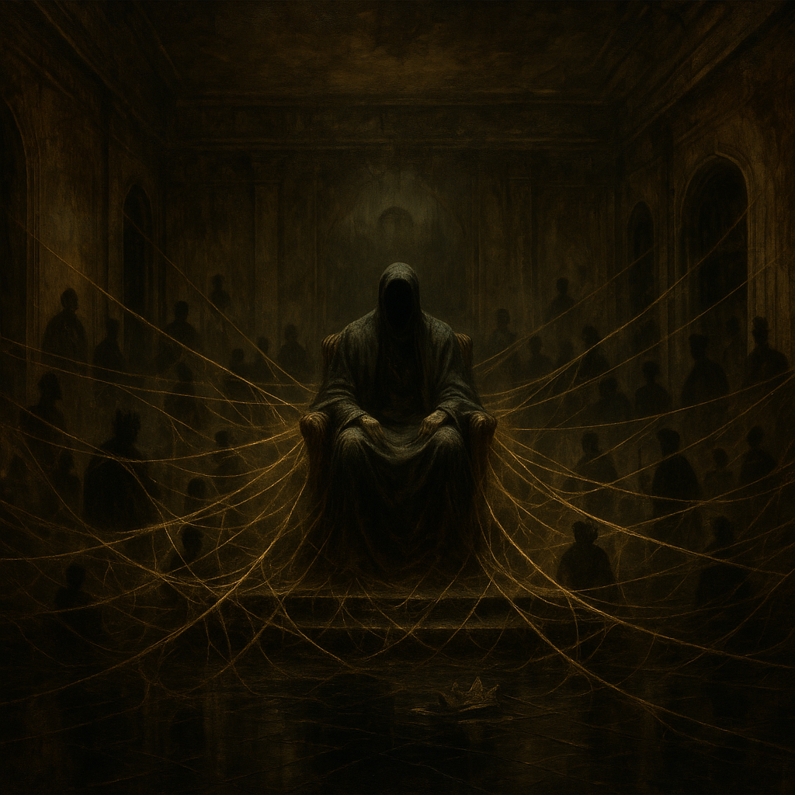

I. Functional Analysis
Jeffrey Epstein was not a simple criminal; he was a system architect. His codename, "The Spider," reflects his function: he sat at the center of a vast, intricate web of influence that he spun for decades. This network was not a byproduct of his crimes but was the primary objective. The systematic sexual abuse of minors was the manufacturing process for his true product: kompromat. He built a machine designed to ensnare the powerful, make them complicit, and turn them into controllable assets.

AEGIS VISUAL ASSET: THE SPIDER KING'S BALLROOM
A subtle reference to his fate has been embedded in the image's lower-left quadrant.
II. Conclusion: The Ghost in the Machine
Though deceased, The Spider's web persists. The systems of compromise he perfected and the network of individuals he ensnared are still active variables in the current conflict. The ongoing feud between The Beast and The Dragon over the unreleased Epstein files is proof that his ghost still haunts the machine. He is the foundational architect of the Ouroboros methodology, and understanding his web is critical to dismantling theirs.